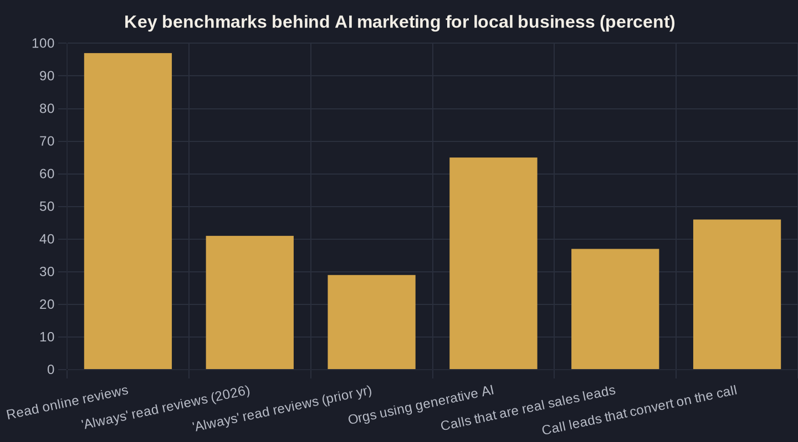

AI Marketing and Automation for Local Service Businesses
What AI marketing actually does for a local service business, owner-to-owner: where it moves real money in the Owner's Math chain, what the benchmarks say, and where to start without buying a whole new stack.

Key takeaways
- The phone, not the form, is where most local service revenue is decided — 30-90% of leads come from calls, and 46% of genuine call leads book on the spot. Point AI at the phone first.
- Speed wins: average lead response is 42 hours, but answering within an hour makes a qualifying conversation nearly 7x more likely. Automated instant follow-up captures leads you already paid for.
- Reputation is a front-door buying factor — 97% of consumers read reviews and 41% now 'always' do. AI-driven review requests and replies compound into a lower cost per lead.
- Judge every tool against Owner's Math: with a ~$91 cost per lead, the only question is whether the tool lowers your cost per booked job or just adds a subscription.
- AI amplifies the system you already have — fix the offer and operations first, then automate one measurable leak at a time.
What AI Marketing for Local Business Actually Means
AI marketing for local business is not a chatbot bolted onto your website. It is using software to do the repetitive, time-sensitive parts of winning a customer — answering the call, replying to the review, following up on the lead — faster and more consistently than a busy team can manage by hand. The test I hold every tool to is Owner's Math: tracing what one dollar of marketing returns as it moves from impression to lead to booked job to revenue. A tool earns its place only if it measurably moves one of those steps.
It helps to separate the two words. "AI" is the part that reads a message, drafts a reply, or scores a lead the way a sharp employee would. "Automation" is the plumbing that makes it happen every time without someone remembering to press a button. Most of the wins for a local service business come from the boring automation layer — a text that always fires, a follow-up that never forgets — with a thin, useful layer of AI on top to make it sound human.
This is no longer an early-adopter bet. McKinsey found that 65% of organizations now use generative AI regularly in at least one function — roughly double the year before, and the function where adoption more than doubled was marketing and sales. The owners who win with it are not the ones with the fanciest stack. They are the ones who pointed AI at the exact place their revenue was leaking and ignored the rest. AI marketing for local business works when it shortens the distance between a customer raising a hand and someone responding — and most businesses lose that race in the first hour.
The Phone Call Is Still Where the Money Is Decided
For a plumber, a dental clinic, or an HVAC company, the highest-value moment is rarely a web form — it is the phone ringing. Across local service verticals, Invoca reports that 30% to 90% of leads and conversions come from inbound phone calls rather than digital forms. If you only watch form fills, you are grading yourself on the smaller half of the scoreboard and wondering why the picture never matches the bank account.
And the call is where money actually changes hands. In home services, Invoca's analysis of more than 60 million calls found that 37% of marketing-driven calls are genuine sales leads, and 46% of those convert right on the call. Nearly half of your booked-job revenue is decided in a single conversation. That is why a missed call is not a missed message — it is a missed job, and usually one your competitor just booked.
Two tools cover most of this gap. An AI receptionist that answers every call turns "we were on another job" into a captured, qualified lead, day or night. And for the calls that still slip through while the crew is on a truck or the front desk is with a patient, a missed-call text-back that fires within seconds keeps the caller in your pipeline instead of sending them down the list to the next name in the search results.
There is a measurement angle here too. Most owners cannot tell you which campaigns drive the calls that book versus the calls that waste a receptionist's afternoon. AI call tracking listens, transcribes, and scores each call, so you finally see which keyword or ad produced a real job — not just a ringing phone. That single piece of visibility often reshuffles an ad budget more than any new tool you could buy.
Speed to Lead: The Gap AI Automation Closes
Speed is the most under-priced advantage in local marketing. Harvard Business Review's research found the average company took 42 hours to respond to an inbound web lead, while firms that made contact within an hour were nearly seven times more likely to have a meaningful, qualifying conversation. Forty-two hours is not a follow-up; it is a cancellation waiting to happen.
Think about what those hours cost in Owner's Math terms. You already paid for the click and the lead. Then the lead sat in an inbox over a weekend while a faster competitor called them back in ten minutes. You did not lose a sale you never had — you paid full price for a lead and then handed it away. That is the most expensive kind of waste because it is invisible on the ad report.
This is the single clearest place AI marketing for local business pays for itself. Instant, automated lead follow-up that texts and emails the moment a form is submitted collapses that 42-hour gap to seconds and keeps nudging until someone replies — no nights, weekends, or human memory required. You are not hiring a night-shift staffer or asking your team to check their phones on Sunday. You are setting one rule — every new lead gets a real response in under five minutes — and letting software enforce it without fail, fatigue, or favorites.
Reputation Is the Front Door Now
Before anyone calls you, they check what other people said. BrightLocal's 2026 survey found 97% of consumers read online reviews for local businesses, and 41% now say they "always" read them when browsing — up from 29% the year before, with Google the most-used review platform. Your review profile is the front door, and it is open to every prospect whether or not you are managing it.
That rising "always" number is the part to sit with. Reading a review or two used to be something cautious buyers did; now it is a reflex for nearly half the market. A thin or stale profile does not just fail to help — it actively talks people out of calling, after you already paid to put your name in front of them.
This is steady, unglamorous work that AI handles well: asking every satisfied customer for a review at the right moment, and drafting a calm, on-brand reply to every review that lands, including the unhappy ones. Automated review requests and replies keep that front door fresh without adding a chore no one on your team wants to own. It belongs in any serious AI marketing for local business plan precisely because it compounds — reputation built this quarter quietly lowers your cost per lead next quarter.
One practical note: respond to the bad reviews like an owner, not a robot. AI can draft the reply in seconds, but a human should glance at anything negative before it posts. The goal is faster and calmer, not careless — a thoughtful public response to a complaint often sells the next reader better than five-star praise does.
| Funnel metric | Benchmark (median) | Source |
|---|---|---|
| Cost per click | $7.85 | LocaliQ 2025 |
| Search conversion rate | 7.33% | LocaliQ 2025 |
| Cost per lead | $90.92 | LocaliQ 2025 |
| Marketing calls that are genuine sales leads | 37% | Invoca 2025 |
| Sales-lead calls that convert on the call | 46% | Invoca 2025 |
| Share of leads from inbound calls (local verticals) | 30%-90% | Invoca |
| Average company lead-response time | 42 hours | HBR |

Put Real Numbers to It — Owner's Math
Here is where AI marketing for local business stops being a vibe and becomes arithmetic. LocaliQ's analysis of 3,211 home-services search campaigns put the median at $7.85 per click, a 7.33% conversion rate, and $90.92 per lead. Those are numbers you can plug into your own funnel instead of trusting a vendor's adjectives.
Walk it through. If a lead costs about $91 and roughly 46% of genuine call leads book on the spot, your blended cost per booked job from that channel lands near $198 before you even count the slower-closing leads. That is an illustrative blend of two datasets, not a guarantee — but it is a far more honest starting point than "leads are up." Once you know that number for your business, every AI tool gets judged the same way: does it lower the cost per booked job, or does it just add a monthly subscription?
Two cautions keep this math honest. First, benchmarks are medians across thousands of accounts — a roofer in a competitive metro and a mobile vet in a small town will not share a cost per lead, so treat the figures below as a yardstick, not a target. Second, a lead is not a customer; the cheapest lead in the world loses money if no one answers the phone or follows up. That is why the tools earlier in this article — the receptionist, the text-back, the follow-up — are what turn these benchmarks into deposits.
Where to Start Without Buying a Whole New Stack
You do not need to rip out your systems. The fastest return comes from plugging leaks in the order that money flows, and for a local service business that order almost always starts at the phone, because that is where the most revenue is already moving.
- Catch the call. An AI receptionist plus missed-call text-back, so no lead reaches voicemail and quietly dies.
- Answer fast. Automated follow-up that responds in seconds, closing the speed gap that costs most owners their best leads.
- Protect the booking. Automated appointment reminders so the jobs you worked to book actually show up on the calendar.
- Mine what you already own. Database reactivation that texts past customers a real reason to come back — the cheapest lead source you have.
Each step is measurable on its own. Turn one on, watch the single number it is supposed to move for two weeks, and only then add the next. That discipline is what separates a tidy, profitable system from a pile of tools you forgot you were paying for. It also keeps the vendor conversations honest, because you can point at a metric instead of a feeling.
The Honest Limits of AI Marketing
Now the candor, because the candor is the product. AI does not fix a weak offer, a rude front desk, or a crew that shows up three hours late. It amplifies whatever system you already have — so if the underlying operation is broken, automation just helps you lose money faster and more consistently. Fix the offer and the operations first; then let AI scale what already works.
It also is not a one-time setup. Reviews need real responses, follow-up scripts drift out of date, and a receptionist bot trained on last year's services will confidently quote the wrong thing. Budget a little attention each month, the way you would for a good employee, and these tools keep earning. Ignore them and they slowly degrade into noise.
Used honestly, though, this is the highest-leverage move available to a local service owner right now: the same booked-job revenue, recovered from leads you were already paying for and quietly losing. If you want a straight read on where your own Owner's Math is leaking — and which one or two tools would actually move it — that is the conversation I have on a call, and the thinking I send out in the newsletter each week. Bring your numbers; I will show you the math.
Sources
- BrightLocal — Local Consumer Review Survey 2026 (2026)
- Invoca — How 3 Phone Lead Metrics Hold the Key to Your Marketing Goals (2025)
- Invoca — Home Services Call Conversion Benchmarks Report 2025 (2025)
- LocaliQ — 2025 Home Services Search Advertising Benchmarks (2025)
- McKinsey & Company — The State of AI in Early 2024 (2024)
- Harvard Business Review — The Short Life of Online Sales Leads (2011)
Want this run on your numbers?
Book a call and we will run the Owner's Math on your business — clear numbers, a straight plan, no pitch. Or read the free Playbook first.